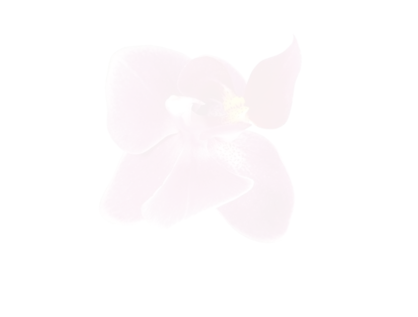
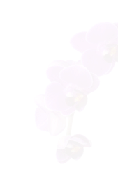
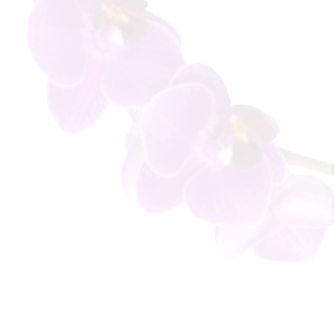
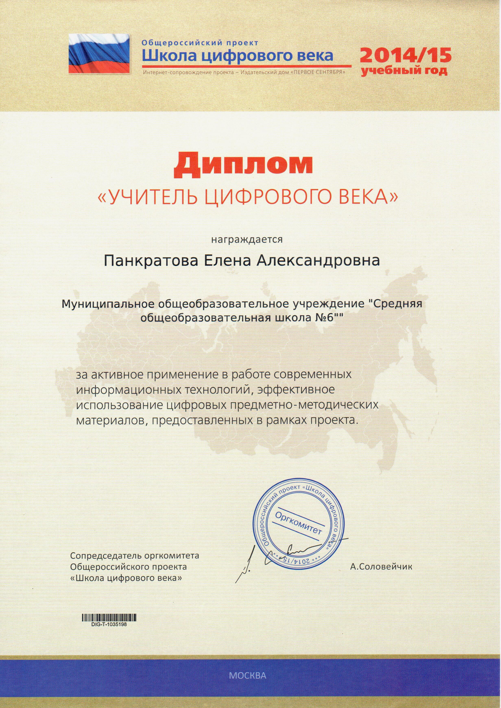
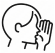

Сайт учителя


+7 922 165 55 71

pankratova_lenochka@mail.ru

+7 922 165 55 71
pankratova_lenochka@mail.ru
Персональный сайт учителя начальных классов
Шабалиной Елены Александровны
Стаж работы 13 лет
 Добро пожаловать!
Если учитель соединяет в себе любовь к делу и к ученикам, он - совершенный учитель.
Л.Н.Толстой
Мне по-прежнему верится,
Что, если останется жить Земля,
- Высшим достоинством Человечества
Станут когда-нибудь учителя!
Не на словах,
а по вещей традиции,
Которая завтрашней жизни под стать,
Учителем надо будет родиться.
И только после этого стать!..
В нем будет мудрость талантливо дерзкая.
Он будет солнце нести на крыле...
Учитель - профессия дальнего действия,
Главная на Земле.
Р.Рождественский

Портфолио
Главная цель моей педагогической деятельности
|
дать возможность каждому ученику раскрыть свой потенциал с учётом индивидуальных возможностей и запросов |

создать условия для внутреннего комфорта и состояния заинтересованности предметом каждому ученику |
|
Мой город |
Дата рождения |
Общий стаж |
|
Профессия |
Категория |
Место работы |
Обо мне
Грамоты и дипломы

|

|

|
 |
Разработки
Методическая копилка
Внеклассные мероприятия (квизы)
|
Родительское собрание
"Первое условие разумной родительской любви - владеть только доверенностью детей, и счастливы дети, когда для них открыта родительская грудь и объятия, которые всег
да готовы принятьих и правых, и виноватых, и в которые они всегда могут броситься без страха и сомнения". |
Подготовка к школе Выполнение заданий не только поможет будущему первокласснику развить памят, внимание, восприятие, мышление, формировать правильную речь, совершенствовать графические навыки, но и обеспечит неободимым базовым уровнем знаний и навыков, которые помогут ему в дальнейшем хорошо и легко учиться в школе. |
|
Масленница это весёлые проводы зимы, радостная встреча близкого, весеннего тепла, обновления природы. Наши предки верили, что Зиму злую нужно помогать прогонять, а Весну - красавицу закликать, приманивать, "умасливать" угощениями - блинами. А чтобы Зима быстрей ушла, а Весна появилась, мы будем тоже веселиться, петь, играть от души, и в этом нам поможет Масленичный квиз. |
8 Марта это самый прекрасный весенний праздник. Во всех школах обязательно проводятся различные мероприятия, посвящённые этому замечательному дню. Для того, чтобы праздник запомнился ученикам, важно ответственно подойти к его организации. |
|
Прощание с азбукой
Праздник прощания с Азбукой - очень большое и важное событиев жизни каждого первоклассника. Главное,
сохранить интерес к познанию нового и вдохновить школьников на следующие достижения. Теперь начинается совсем новый этап в жизни юного
читателя, ведь последняя страница "Азбуки" - это дверь в новую жизнь. Подумать только, уже изучены все буквы, освоено чтение. Для каждого
ребёнка это большое достижени, незабываемое начало дороги к новым знаниям. Пусть в школьной жизни наши самых маленьких учеников будет
много таки побед. |

Медиа


Родителям
10 великих слов в помощь родителям
Простые, мощные и эффективные слова.
Здесь вы не найдете ни «спасибо», ни «терпение», хотя и они, безусловно, тоже очень важны.
Этот пост – просто напоминание о том, что мы и так с вами знаем, как чувствуем и ошибаемся.
|

1. Шепот Еще во время работы в школе я дала себе слово не повышать голос на учеников и вообще на кого-либо. Крик – проявление собственной слабости. Но дети, особенно маленькие, реагируют на интонацию больше, чем на содержание речи. Как же достучаться до непосед без повышенных тонов? Проверено: единственное лекарство, которое действует эффективнее, чем вопли (пусть они даже из самых лучших побуждений), – это когда вы наклоняетесь к уху вашего малыша, установив перед этим зрительный контакт, и начинаете говорить – очень тихо. Это требует от родителей высокого самообладания. Зато дает поразительные результаты. |

2. Может быть Потому что сказать традиционное «нет» – как будто снять малыша с предохранителя. Запрет «в лоб» может спровоцировать истерику, особенно, если ребенок, который слышит «нет», голоден или просто устал. В качестве альтернативы предлагаем «может быть» – по крайней мере, это честно. Если дети спрашивают: «А мы пойдем сейчас на улицу?», я спокойно сообщаю: «Может быть». И добавляю: «Если уберете все игрушки на полки и быстро оденетесь». Это помогает мотивировать ребят вести себя соответствующим образом. И дальше все просто: убрали игрушки, оделись – пошли на улицу, не убрали – не пошли. Важно, чтобы взрослые сами выполняли собственные обещания. Слова «Посмотрим» и «чуть попозже» действуют так же эффективно. |
|
3. Прости Взрослые тоже ошибаются. Что поделать? Мы не боги. Мы готовы принести свои извинения родственникам, друзьям, коллегам по работе. И наши дети нуждаются в вежливости не меньше взрослых. Это моделирует уважительное отношение к окружающим. Детям очень нужно видеть именно такое общение – хороший образец задает формат поведения в будущем, а еще помогает понять, что никто в этом мире не идеален, что, в общем-то, правда. |
4. Стоп Сигнал, останавливающий ребенка, прерывающий его действия, которые мы хотим прекратить, и подсказывающий, что делать вместо этого. Если дети носятся по квартире, достаточно произнести «Стоп!» и дать инструмент: «Сядьте за столом и сложите пазл/постройте замок». Условьтесь с малышом заранее, что «Стоп, игра!» действует на всех без исключения при любых обстоятельствах: все действия прекращаются (если игра не по правилам, становится опасной, неприятной, слишком шумной…). Главное – не злоупотреблять этим сильным инструментом, иначе он перестанет быть эффективным. |
|
5. Глазки Мы все слушаем более внимательно, глядя в глаза собеседнику. Когда я хочу быть уверенной в том, что ребята меня действительно слушают и слышат, я спрашиваю: «Где глазки?» Подсказка: произносить это нужно совершенно спокойно, лучше ласково, с улыбкой или нейтрально, иначе дети просто не захотят на вас смотреть. Кому же захочется встретиться взглядом со злым и вопящим человеком? А как только детские глаза прикованы к вам, вы владеете детским вниманием. |
6. Учимся Если наш ребенок совершает ошибку, на помощь приходит фраза «Это нормально, ничего страшного – мы все учимся!» Она же пригодится для защиты от косых взглядов, от людей, которые осуждающее смотрят на нас вместе с ребенком. В конце концов, мы все учимся, включая и тех, кто сверлит нас взглядом. |
|
7. Ты можешь! Напоминайте об этом ребенку, когда он сомневается в своих силах. Неудача – это только сигнал о том, что малыш добьется желаемого результата, если приложит чуть больше усилий, потренируется. Скажите детям, что вы знаете, что они могут. И обязательно откройте секрет: многое из того, что вы сейчас сами делаете с легкостью, когда-то потребовало от вас столько стараний. |
8. Будьте! Когда дети задают вопросы, подарите им свои глаза и внимание. Когда малыши о чем-то рассказывают, слушайте. Будьте со своим ребенком. Это так много значит для маленького человека. Как-то по дороге домой из детского сада мой трехлетний сын, задавая уже сто первый вопрос, понял, что я отвечаю машинально «да-нет» (силы после рабочего дня на исходе), а разговор мне все-таки хотелось поддержать. В итоге я услышала настойчивое: «Ну, мама, говори! Ты не говоришь!» Дети сразу чувствуют, насколько мы погружены в разговор с ними. |
|
9. Всегда!
Не удивительно, что там, где дети, всегда шумно и неспокойно! |
10. Смейтесь Многие вещи, которые нас как родителей раздражают, скорее всего, не были бы такими, если бы мы просто могли посмеяться над ними. Хороший хохот – замечательная кнопка сброса, если хотите, выключатель. |
|
1. Шепот Еще во время работы в школе я дала себе слово не повышать голос на учеников и вообще на кого-либо. Крик – проявление собственной слабости. Но дети, особенно маленькие, реагируют на интонацию больше, чем на содержание речи. Как же достучаться до непосед без повышенных тонов? Проверено: единственное лекарство, которое действует эффективнее, чем вопли (пусть они даже из самых лучших побуждений), – это когда вы наклоняетесь к уху вашего малыша, установив перед этим зрительный контакт, и начинаете говорить – очень тихо. Это требует от родителей высокого самообладания. Зато дает поразительные результаты. |
|
2. Может быть Потому что сказать традиционное «нет» – как будто снять малыша с предохранителя. Запрет «в лоб» может спровоцировать истерику, особенно, если ребенок, который слышит «нет», голоден или просто устал. В качестве альтернативы предлагаем «может быть» – по крайней мере, это честно. Если дети спрашивают: «А мы пойдем сейчас на улицу?», я спокойно сообщаю: «Может быть». И добавляю: «Если уберете все игрушки на полки и быстро оденетесь». Это помогает мотивировать ребят вести себя соответствующим образом. И дальше все просто: убрали игрушки, оделись – пошли на улицу, не убрали – не пошли. Важно, чтобы взрослые сами выполняли собственные обещания. Слова «Посмотрим» и «чуть попозже» действуют так же эффективно. |
|
3. Прости Взрослые тоже ошибаются. Что поделать? Мы не боги. Мы готовы принести свои извинения родственникам, друзьям, коллегам по работе. И наши дети нуждаются в вежливости не меньше взрослых. Это моделирует уважительное отношение к окружающим. Детям очень нужно видеть именно такое общение – хороший образец задает формат поведения в будущем, а еще помогает понять, что никто в этом мире не идеален, что, в общем-то, правда. |
|
4. Стоп Сигнал, останавливающий ребенка, прерывающий его действия, которые мы хотим прекратить, и подсказывающий, что делать вместо этого. Если дети носятся по квартире, достаточно произнести «Стоп!» и дать инструмент: «Сядьте за столом и сложите пазл/постройте замок». Условьтесь с малышом заранее, что «Стоп, игра!» действует на всех без исключения при любых обстоятельствах: все действия прекращаются (если игра не по правилам, становится опасной, неприятной, слишком шумной…). Главное – не злоупотреблять этим сильным инструментом, иначе он перестанет быть эффективным. |
|
5. Глазки Мы все слушаем более внимательно, глядя в глаза собеседнику. Когда я хочу быть уверенной в том, что ребята меня действительно слушают и слышат, я спрашиваю: «Где глазки?» Подсказка: произносить это нужно совершенно спокойно, лучше ласково, с улыбкой или нейтрально, иначе дети просто не захотят на вас смотреть. Кому же захочется встретиться взглядом со злым и вопящим человеком? А как только детские глаза прикованы к вам, вы владеете детским вниманием. |
|
6. Учимся Если наш ребенок совершает ошибку, на помощь приходит фраза «Это нормально, ничего страшного – мы все учимся!» Она же пригодится для защиты от косых взглядов, от людей, которые осуждающее смотрят на нас вместе с ребенком. В конце концов, мы все учимся, включая и тех, кто сверлит нас взглядом. |
|
7. Ты можешь! Напоминайте об этом ребенку, когда он сомневается в своих силах. Неудача – это только сигнал о том, что малыш добьется желаемого результата, если приложит чуть больше усилий, потренируется. Скажите детям, что вы знаете, что они могут. И обязательно откройте секрет: многое из того, что вы сейчас сами делаете с легкостью, когда-то потребовало от вас столько стараний. |
|
8. Будьте! Когда дети задают вопросы, подарите им свои глаза и внимание. Когда малыши о чем-то рассказывают, слушайте. Будьте со своим ребенком. Это так много значит для маленького человека. Как-то по дороге домой из детского сада мой трехлетний сын, задавая уже сто первый вопрос, понял, что я отвечаю машинально «да-нет» (силы после рабочего дня на исходе), а разговор мне все-таки хотелось поддержать. В итоге я услышала настойчивое: «Ну, мама, говори! Ты не говоришь!» Дети сразу чувствуют, насколько мы погружены в разговор с ними. |
|
9. Всегда!
Не удивительно, что там, где дети, всегда шумно и неспокойно! |
|
10. Смейтесь Многие вещи, которые нас как родителей раздражают, скорее всего, не были бы такими, если бы мы просто могли посмеяться над ними. Хороший хохот – замечательная кнопка сброса, если хотите, выключатель. |
Правда в том, что эти 10 слов помогают не только родителям, так что будьте сильнее, приобщайтесь к родительскому лексикону.
Анастасия Лепешова
|
Контакты
|